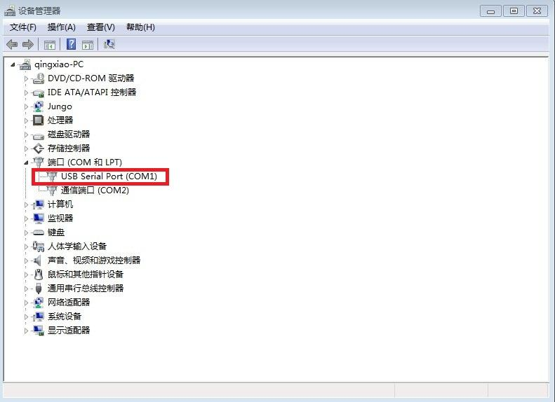
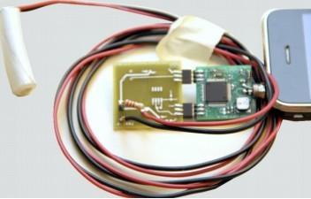

HiJack is a hardware/software platform for creating cubic-inch sensor peripherals for the mobile phone. HiJack devices harvest power and use bandwidth from the mobile phone's headset interface. The HiJack platform enables a new class of small and cheap phone-centric sensor peripherals that support plug-and-play operation. HiJack has been tested with the iPhone 3G/3GS/4G, iPod Touch, and iPad devices.
A Hijack app LIB is also available to help you design your own particular "ixxxx" app with this kit. It would be great if you can share your innovations with the community.
Model: TES52959P
The Hijack kit includes:
Because of the connector we used in last batch can not be found in market, we have transferred to the original hijack version, which we found a fatal bug in the connector.
In case of using with Iphone4&4S, Because the MIC Pin of audio connector touches shell of Iphone4&4GS, a insulating washer needs to be used to avoid this fatal bug, as the following:
The Hijack is shipped with a firmware downloaded into it's MCU. This firmware enables the MCU to convert the analog voltage on pin A_6 to a digital result, and then send this result to the iPhone/iPad/iTouch. However, you may occasionally need to re-download the firmware or upgrade it to a new version.

If you see the "xxxx bytes programmed" message, the firmware download is OK.
When you want to upgrade the firmware, just replace the hijack_a6.ihex in the tos-bsl-win with the firmware you want to upgrade to.
Hijack mainboard.PDF
Programmer.PDF
ProtoBoard.PDF
May include key specifications and other specifications.
| Item | Minimum | Typical | Maximum |
|---|---|---|---|
| Power available | - | 7.4mW | - |
| Voltage output | 2.75v | 2.8v | 3.3v |
The Hijack kit combines energy transfer, data input, and data output into a single, integrated application. With The Hijack kit, it is possible to change your iPhone/iPad/iPod Touch into an instrument that can display a sensor reading with the help of The Hijack.
Lots of sensors deliver analog output and it's easy to connect the seeedstudio twig with the HiJack ProtoBoard.
The MCU on the Hijack mainboard A/D convert the voltage on the Potentiometer , and then sent the result to the iPad via audio connector. Rotate the Potentiometer, you will see the waveform on the iPad changes with your rotating. And, the voltage result showed at the bottom of iPad changes.
Connect the twig-light sensor to HiJack ProtoBoard, the waveform on the iPad changes because light sensors which change voltage based on the light of the environment.You can see from the pictures,the leftside one shows the low voltage about 0.8v because light sensor is in the dark place.The other one shows the 1.9v voltage because it is exposed to the light source.
When the voltage on A_6 pin is digital signal(0V or 3.3V), the MCU also A/D convert it and sent result to iPhone/iPad/iTouch. It is easy for the this system to detect those sensors with logic output. For example, change the above Potentiometer to a twig_touch sensor.
Touch the sensor with your finger, you will find the waveform on the iPad screen changes to high, about 3.3v, and release you finger, the waveform would drop to low, about 0v.
Vidio for the above application
Phone-powered EKG Interface:
Soil Moisture Sensors:

The Hijack kit improvement is still in processing. there will be improvement in 2 aspect:
Includes important code snippet. Demo code like :
Demo code { }
The projects and application examples.
All the components used to produce the product.
Please list your question here:
If you have questions or other better design ideas, you can go to our forum or wish to discuss.
| Revision | Descriptions | Release |
|---|---|---|
| v0.9b | Initial public release | date |
The Additional Idea is the place to write your project ideas about this product, or other usages you've found. Or you can write them on Projects page.
In China every commercial bank deliver the certification in USB storage card. They can use this interface to communicate with the storage card.
Give the product link on Bazaar.
Other related products and resources.
This documentation is licensed under the Creative Commons Attribution-ShareAlike License 3.0 Source code and libraries are licensed under GPL/LGPL, see source code files for details.
Links to external webpages which provide more application ideas, documents/datasheet or software libraries.
Copyright (c) 2008-2016 Seeed Development Limited (www.seeedstudio.com / www.seeed.cc)